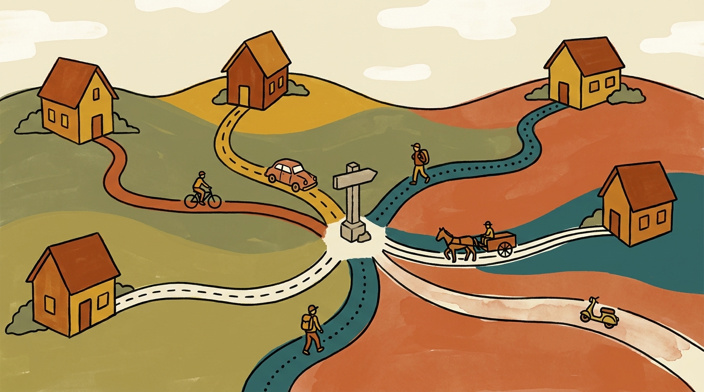

1 The problem: narration is not evidence
The dominant family of techniques for mining reusable expertise from agent trajectories shares one structural feature: Voyager's verified code-skill library, ExpeL's natural-language insight extraction, Agent Workflow Memory's induced workflows, SkillWeaver's discovered API skills, MACLA's frozen-LLM procedural memory, and SkillOpt's validation-gated skill-document editing all reflect on a completed trajectory and ask, in one form or another, why the agent did what it did.1 The trajectory is read; nothing about it is changed.
This works, in the sense that these methods measurably improve downstream task success. The reported gains range from 24% to 54% relative improvement across benchmarks.2 But improved downstream performance is consistent with two very different underlying mechanisms: the extracted "insight" correctly identifies the causal factor that made the difference, or the extracted insight is a plausible-sounding correlate that happens to co-occur with success often enough to help on average without being causally responsible for it. Reflection-based methods cannot distinguish these cases, because they never intervene. They only ever observe.
The reason this matters is not speculative. Turpin, Michael, Perez, and Bowman (NeurIPS 2023) demonstrated that chain-of-thought self-explanations can systematically misrepresent the true causal driver of a model's own prediction.3 Using a concrete, checkable manipulation, reordering multiple-choice answer options so the correct answer is always in a fixed position, they shifted model accuracy by up to 36 percentage points across thirteen BIG-Bench Hard tasks, while the model's own chain-of-thought never mentioned the manipulation and instead generated a fluent explanation rationalizing whichever answer it happened to land on.
"CoT explanations can systematically misrepresent the true reason for a model's prediction."
Turpin et al., Language Models Don't Always Say What They Think, NeurIPS 2023, arXiv:2305.04388
This is the machine-learning mirror of a finding human-factors research established decades earlier, in a literature this memo draws on directly: subjective confidence tracks how internally coherent an explanation feels, not whether it is accurate, and there is no internal marker that distinguishes a correct intuition from a confidently wrong one.4 If a system for mining expertise from agent transcripts relies on the agent's own account of its reasoning, it inherits this failure mode by construction, regardless of how sophisticated the surrounding pipeline is.
2 What human-factors research already solved
The problem of extracting real judgment from an expert who cannot reliably introspect on their own decision process is not new; it is the founding problem of naturalistic decision-making (NDM) research, and it has been worked on continuously since Gary Klein's Critical Decision Method (CDM) formalized a fix in 1989.5 A full survey of forty-three locally available skills on cognitive task analysis, CDM, NDM, and expertise elicitation, cross-checked against primary sources where the skills cite them, converges on a small number of principles that transfer directly to the LLM-agent case.
2.1 Self-report is a known-unreliable instrument, independently rediscovered
This is not a hedge or a methodological footnote in this literature. It is stated as flatly and as repeatedly as any claim in the corpus.
"Experts cannot reliably report their own decision processes. The cognitive operations that produce expert performance are largely tacit and inaccessible to introspection. Self-report produces rationalized reconstructions, not process descriptions."
Recognition-Primed Decision literature (Klein & Calderwood), applied CDM skill corpus
"Asking experts 'what is your rule for X?' Abstract rule elicitation produces post-hoc rationalizations, not actual decision logic."
Recognition-primed knowledge-elicitation literature
The corpus names this failure by several overlapping labels: the Rehearsed Account Trap, the Expert Reconstruction Fallacy, Retrospective Distortion, Hindsight Bias in Failure Analysis. The underlying diagnosis is the same across every independent source: a fluent, logically-arced, hesitation-free account of a past decision is evidence the account was reconstructed, not evidence it is accurate.6
2.2 Counterfactual and contrastive probing is the recurring fix
The fix converges more cleanly than the diagnosis does. At least six methodologically independent traditions, CDM, Applied Cognitive Task Analysis, the Mediator Expertise Live Interview method, clinical diagnostic reasoning, Klein & Hoffman's causal-reasoning framework, and Hoffman & Lintern's expertise-elicitation synthesis, each independently arrived at some variant of the same probe: what if that cue had been absent, and what is the closest case that looks the same but isn't?
CDM, Sweep 4: "What if you'd had less experience? Where would a novice have gone wrong here?" It is described as the single highest-yield question in the entire protocol.
Mediator Expertise Live Interview: "Have you ever seen something that looked like that but wasn't? How would you have known the difference?"
Clinical diagnostic reasoning: "How is this patient NOT like that case?" Posed explicitly as the corrective to availability bias.
Hoffman & Lintern (Cambridge Handbook of Expertise): lists "Contrasting Cases" as a first-class elicitation method, "effective for discrimination criteria, category boundaries."
The mechanism these methods share is worth naming precisely, because it is what an automated version has to reproduce: a rehearsed account has no principled boundary condition, because it was never actually conditioned on the cue it claims to explain. Forcing a respondent to specify when the rule would not apply exposes whether a real, cue-conditioned decision process exists underneath the narrative.
2.3 A formal causal test, not just a probing heuristic
One instance in the survey goes past probing heuristics entirely: a three-part causal validity test from Klein and Hoffman's work on causal reasoning in applied settings, close enough to formal counterfactual causal inference that it deserves to be quoted in full.7
| Criterion | Question it answers |
|---|---|
| Propensity | Is there a plausible mechanism by which the candidate cause could produce the effect? |
| Reversibility | Would removing the candidate cause eliminate the effect? A literal counterfactual test. |
| Covariation | Do the cause and effect statistically co-occur across multiple cases? |
The corpus is explicit that these criteria are not interchangeable and can disagree: "context can flip all three verdicts simultaneously," and the single most-cited failure mode in this part of the literature is treating covariation as sufficient on its own: "covariation-only reasoning produces interventions that address correlates rather than causes."7 The reversibility criterion is, in substance, exactly the counterfactual test this memo proposes to automate: does the effect disappear when the hypothesized cause is removed.
2.4 A single transcript is a single expert, and that failure mode is documented too
The literature is equally insistent on a second, independent validation axis that is easy to miss if the paper only borrows the counterfactual-probing half: no single source, however deeply probed, is trusted alone. Applied Cognitive Task Analysis requires three to five expert interviews before drawing conclusions and names "Premature Conclusion" as an explicit failure mode.8 A worked example in the expert-task-analysis literature is unusually concrete about the cost of skipping this: a first expert's model of pier-side ship-handling procedure appeared complete, but a second expert immediately supplied an entire missing step, tugboat use, that the first expert's automaticity had made invisible even to themselves.9 ShadowBox, a related expertise-transfer method, goes further and treats 100% consensus across an expert panel as a warning sign ("Consensus Perfectionism") rather than a success condition, on the theory that real domains have real disagreement and collapsing it destroys information about context-dependent branching.10
Applied to this memo's proposal directly: a counterfactual fork of a single agent transcript is, structurally, the single-expert-oracle failure mode this literature repeatedly warns against. It is anecdote until it recurs.
What this literature does not supply
Every quantitative threshold found in this corpus is structural, not statistical: three-to-five interviews, two-to-five heuristics per case, a 60–90% consensus band, a minimum of three decision-cue entries. None of it is a p-value, a confidence interval, or a power calculation. This is a qualitative, protocol-driven literature. It tells us what to validate against and why self-report fails; it does not tell us how many counterfactual replays are enough to trust a divergence over noise. For that, this memo has to look elsewhere — Section 3.
3 Prior art: three convergent discoveries
Before going further, it is worth being precise about what is and is not new here. This is not a wholly novel idea; it keeps getting independently rediscovered, once as a shipped product feature and twice as an academic formalization, which is itself evidence the underlying need is real rather than a rationalization for a design already wanted.
3.1 Codex CLI already ships this as a named verb
The most directly relevant prior art is not a paper at all. OpenAI's Codex CLI persists every session as an append-only JSONL rollout file, managed by a RolloutRecorder keyed by a ThreadId, with a SessionMeta header that carries forked_from_id and parent_thread_id fields.18 On top of that, the CLI exposes codex resume <SESSION_ID>, which resumes any arbitrary prior session by UUID or name, not just the most recent, and a distinct codex fork command (or in-session /fork) that explicitly clones a prior session's history into a new session ID while leaving the original transcript untouched. Fork-into-two-diverging-continuations is a first-class, user-facing primitive in a widely used coding agent today, not a research proposal.
The gap even Codex's own fork has
This capability is only fully available through the interactive CLI. Codex's MCP server tool, codex-reply, can only resume a conversation still resident in the MCP server's in-memory conversation manager. Once that process restarts, resumption fails with "Session not found," even though the rollout JSONL for that session still exists on disk and codex-core internally has a function to resume from it. This gap has been open across multiple GitHub issues for over a year with no full fix landed.19 The lesson generalizes: a fork/resume primitive existing at the CLI layer does not mean it is exposed at every integration surface a pipeline might need to drive it from. This memo's runbook (Section 8) has to account for which surface it is actually calling.
3.2 Causal Agent Replay
Causal Agent Replay (arXiv:2606.08275) formalizes the same idea academically: it models an agent run explicitly as a structural causal model, applies a do-operation at a chosen step, and re-executes the trajectory forward under the same stochastic policy, measuring the resulting shift in the outcome distribution.11 It uses a single-step contrastive estimator (a "point-of-commitment rule") for identifying which step was pivotal, plus a budget-bounded Monte-Carlo Shapley estimator for assigning credit across multiple steps when responsibility is distributed. It is validated against synthetic ground-truth SCMs, where it correctly recovers a known pivotal step and a known two-step interaction (Shapley values of 0.44 and 0.45 against a near-zero third factor, with an efficiency sum of 0.909 against an analytic value of 0.91).
3.3 Knowledge-Based Zero-Replay Debugging
A second paper, Knowledge-Based Zero-Replay Debugging of Multi-Agent LLM Traces (arXiv:2606.14805), independently implements what is functionally the same fork/checkpoint/perturb/re-run mechanism as its baseline oracle: a replay policy that restarts a trace from a checkpoint under an intervention (removing or perturbing a message, a routing decision, a memory write, a tool call, or an agent), scored by outcome, state, or trajectory-label divergence.12
The gap this memo is actually written to close
Both academic papers explicitly and narrowly scope out the exact problem this memo needs solved. Zero-Replay Debugging's own limitations section states plainly: "stochastic extension requires confidence-interval reporting on oracle effects and is out of scope." Neither paper offers a Monte Carlo protocol, a repeated-run design, a permutation or paired-difference test, or sample-size guidance for the case where the underlying agent samples stochastically, which is the normal operating condition for every deployed LLM agent, not an edge case. This is the specific, citable, still-open problem this memo's Section 7 addresses.
Two claims worth ruling out explicitly, because they surfaced during research and were not confirmed on independent verification: neither paper frames its own motivation as an explicit response to unreliable self-report or LLM-judge-based attribution (that framing is this memo's, not theirs), and a third candidate paper initially flagged as prior art, sometimes referred to informally as "CausalFlow," could not be confirmed to implement the described mechanism on re-verification and should not be cited as such without independent confirmation.
3.4 The gap was already felt inside this project, before this memo existed
A separate, unrelated internal research corpus on agent accountability, written weeks before this memo about a different problem (making agents durably accountable to future promises, not attributing past decisions), independently ran into the same wall while designing a "reconsideration policy" mechanism that needed to know whether checking in on a decision would have helped:
"NO GROUND TRUTH FOR S-TAGS: Bratman's taxonomy assumes an oracle that knows ex-post whether reconsidering would have helped… In a real codebase there is no such oracle. 'Would checking have paid off' is counterfactual and unobservable. The mechanism reifies a counterfactual into a logged enum and then tunes on it. Garbage counterfactual in, confident threshold out."
Internal adversarial-verdicts review, agent-accountability research corpus, 2026-05-31
That corpus never built a replay/fork harness to actually answer the question it flagged as unanswerable. It proposed external-oracle re-verification of claimed artifacts (did the test still pass?) as its fix instead, which checks whether a claim is true now, not whether a specific past decision was caused by a specific factor.20 This memo's mechanism is a plausible answer to a problem this project had already named and set aside as unsolvable, in an entirely different context.
3.5 What this memo adds
Given that the core mechanism already exists as a shipped CLI verb and in the ML literature, the honest framing of this memo's contribution is narrower, and more useful, than "novel technique." It is: (a) the specific statistical protocol for the stochastic case that both academic papers explicitly left as future work (Section 7); (b) importing validation discipline from a much older, much more battle-tested literature (contrastive-probe design, single-source skepticism, falsifiability gates) that neither the ML papers nor Codex's own fork command carry with them (Section 2); and (c) reframing the target use case from failure-debugging (why did this one trace fail?) to expertise-mining at scale (which recurring causal patterns, aggregated across many traces, deserve to become a durable skill?). That reframing changes the design in a specific way: promotion to a reusable heuristic requires recurrence across sessions, not a single trace's divergence, directly following the single-expert-oracle principle from Section 2.4.
4 Cross-runtime parallels: a genre, not one vendor's feature
Checkpoint-and-resume is not one vendor's feature. It recurs independently across every serious agent runtime surveyed for this memo, each with a different concrete implementation, different capability boundaries, and no shared cross-vendor standard tying them together.

4.1 What this project already ships
Port Daddy's own ADR-0118 ("Harness Adapter Contract for N:N Session Portability") is a shipped, live answer to exactly this question, and it rejects modeling resume as one canonical mechanism in favor of a contract with per-adapter implementations:
"Port Daddy can launch many model providers and agent CLIs, but launchability is not session portability. Claude, Codex, Gemini, Agy, Aider, API providers, and local model servers expose different session identifiers, transcript stores, auth boundaries, and live-control channels. Pairwise bridges would require N×(N-1) integrations and would still conflate native resume with reconstructed continuation."
ADR-0118: Harness Adapter Contract, docs/adr/0118-harness-adapter-contract.md
The ADR's generated capability matrix draws a hard line between adapters where the harness itself owns the session identifier (native resume) and adapters where Port Daddy has to reconstruct continuation from a sanitized handoff capsule (handoff-only), because the provider call is stateless:
claude-code — claude --resume {sessionId} -p {prompt}
codex-cli — codex exec resume {sessionId} {prompt}
agy-cli (Antigravity, Google's coding-agent CLI) — agy --conversation {sessionId} --print {prompt}
cloudflare-workers-ai — handoff-only: "Provider calls have no native harness session identity; continuation is reconstructed from a handoff capsule."
ollama — handoff-only: "A model server is not an agent harness; Port Daddy must own tools, transcript, state, and continuation."
The same document defines a five-level transcript fidelity ladder in its companion contract, where the top level is explicitly the gate for forking: T5, "Resumable transcript," is "T4 plus checkpoints, compaction packets, memory/source citations, claims, active commitments, successor metadata, rollback point," with the rule that "T5 is required before the UI offers 'fork successor from here' as a strong resume action."21 This is the real, provider-neutral checkpoint schema this memo's mechanism targets.
4.2 Capability by runtime
| Runtime | Durable checkpoint | Arbitrary resume | Fork into two continuations |
|---|---|---|---|
| Codex CLI | native | native by UUID or name | native — codex fork is a named verb18 |
| Claude Code / Agy (Antigravity) | native per adapter | native — --resume / --conversation | not confirmed as a distinct verb from resume in this pass; ADR-0118 models resume, not an explicit fork command, for these two |
| Cloudflare Agents SDK | native — Durable Object SQLite, survives hibernation at zero compute cost while asleep | native — full history from SQLite on wake, no replay needed | experimental — tree-structured Session API, branch-on-append via parent_id; Cloudflare's own docs flag it as preview, API surface "may evolve"22 |
| Aider | incidental — auto-commits to git after every edit | linear only — /undo steps back one commit at a time, no jump-to-arbitrary-commit | absent — no native fork command; a 2024 feature request for exactly this remains open, unshipped as of mid-202623 |
| Cursor | filesystem-only — snapshots modified files before significant changes | restore only — reverts files to a prior snapshot | absent — no conversational/context forking, only file-state restore24 |
| Ollama | not confirmed | not confirmed | refuted — specific claims of a KV-cache branch/fork primitive did not survive adversarial verification25 |
Three structurally different implementations of the same idea, in one survey: a CLI-native verb operating on durable rollout files (Codex), a platform-level primitive built into a hosting infrastructure's storage model (Cloudflare's Durable Objects), and an incidental byproduct of an unrelated design choice (Aider's git auto-commit habit, which happens to produce checkpoints as a side effect of wanting undo safety). No recognized cross-vendor standard for a portable, forkable trajectory format was found — not in the Model Context Protocol, not in OpenTelemetry's GenAI semantic conventions. The closest thing is DeltaBox (arXiv:2605.22781), a May 2026 systems-research paper proposing an OS-level abstraction (overlayfs copy-on-write, CRIU process dumps, Firecracker microVMs) for forking a frozen sandbox checkpoint into many diverging children for test-time tree search.26 It operates a full layer below the conversation-transcript level this memo's mechanism targets, and it is a single ~2-month-old paper, not an adopted standard — but its existence is corroborating evidence that the industry recognizes this as a real, structurally recurring problem, not a Port Daddy-specific one.
One term this research could not confirm from public sources
"Agy" is real and appears in ADR-0118 and this repo's own skills/agentic-software-installation/references/agy.md, where it is identified as the Antigravity CLI, Google's coding-agent product, listed alongside Claude/Codex/Gemini as a supported Port Daddy multi-backend spawn target. A dedicated external web-research pass, run independently of the internal-docs survey, found no public corroboration of a tool by this name — likely because Antigravity is new enough that it is not yet well-indexed externally, not because the internal documentation is wrong. This memo cites it from the internal ADR as a primary source, while flagging plainly that it is unconfirmed by external search at the time of writing.
5 The mechanism
1. Detect — cheap, structural, no model call
Scan a completed session's execution log for high-entropy moments: retries, explicit self-corrections, tool-call divergence from the modal pattern, or backtracks. This is pattern-matching over log structure, not an LLM judgment call and not keyword-matching over prose. The concrete implementation used for Section 6's real-data run flags a tool call only when it repeats the immediately preceding tool name after that prior call's structured result carried an error flag, which is a property of the log's own fields, not of anything written in natural language. This is the free filtering pass that keeps the expensive steps (3–4) affordable at corpus scale.
2. Fork — resume from the exact checkpointed prefix
At each flagged decision point, resume execution from that exact cached state rather than re-deriving it from a summary or a replayed prompt. The distinction matters: a summary is already a lossy narration of the state; a true checkpoint resumption preserves the actual context the original decision was conditioned on. Section 4 surveys what "exact checkpointed state" concretely means per runtime: it is not the same operation in Codex, Cloudflare's Agents SDK, and Claude Code, even though the effect is the same.
3. Perturb — a deliberate, single, named intervention
Mask a tool result, remove a fact the agent had noticed, or nudge the context toward an alternative the agent appears to have considered and rejected. This operationalizes CDM's novice-error probe and Applied Cognitive Task Analysis's contrastive-example probe as an executed action rather than an asked question. Per Section 7.2's design constraint, apply the intervention in both directions where feasible. Masking-out (testing necessity) and injecting-in (testing sufficiency) are not interchangeable, and can surface different structure.
4. Diff — observed divergence, not narrated explanation
Compare the factual and counterfactual continuations using a continuous divergence metric, not a binary pass/fail. Section 7 gives the statistical protocol for deciding whether an observed divergence exceeds what stochastic sampling alone would produce, and Section 7.4 walks through a small real Monte Carlo run of exactly this comparison.
5. Promote — only on recurrence, never on one trace
A single session's confirmed divergence is not a heuristic; it is an observation. Per Section 2.4, require the same divergence pattern to recur across multiple similar sessions before writing it as a heuristic, in the same conditional form CDM sessions are required to produce: when [cue], because [reason], do [action], unless [exception]. It should then pass the same falsifiability check CDM applies to human-elicited heuristics: if the rule could never fire incorrectly, it is a tautology, not a heuristic, and should be discarded rather than filed.
6 Mapping to existing infrastructure
What actually exists in this codebase for the fork/resume primitive this technique needs is better evidence for the memo's thesis than any single tool's API could be: a real, shipped, adversarially-designed contract covering many runtimes at once, not one canonical mechanism.
| Mechanism needs | Existing primitive |
|---|---|
| Checkpointed resumption from an exact prior state, per runtime | ADR-0118's harness adapter contract: native resume where the runtime owns the session ID (claude --resume, codex exec resume, agy --conversation), sanitized handoff capsules where it doesn't (Cloudflare Workers AI, Ollama, Groq, other API providers). See Section 4. |
| A durable, cross-provider transcript/checkpoint schema | docs/architecture/agent-harbor-technical-binder/work-packets/transcript-receipt-persistence-contract.md's canonical hash-chained TranscriptEvent log, explicitly "provider-neutral… Claude Code, Codex, Gemini, Aider, Cursor/Windsurf, local OpenAI-compatible servers… all enter the same chain through a body adapter."27 Its T0–T5 fidelity ladder names the top tier "Resumable transcript" and gates a "fork successor from here" UI action on reaching it. |
| A large corpus of completed trajectories to mine | Real local Claude Code session transcripts already sitting on disk. See the stat row below, drawn from an actual scan run for this memo, not a projected figure. |
| Structural log format for cheap decision-point detection | Per-turn JSONL records with typed tool_use/tool_result blocks (including an is_error field), the same shape the Detect pass below was run against. |
| Session/repo-level forking for coding-agent-specific counterfactuals | Worktree branching and pd salvage, which already capture interrupted/resumable session state. |
6.1 A real Detect pass, run against real transcripts
Section 5's Detect step was run for real against this machine's own local transcript corpus rather than only described. The detector is purely structural, per the same house rule against prose-keyword classification that governs everything else in this pipeline: a candidate decision point is logged only when a tool call repeats the immediately preceding tool's name, and that preceding call's structured result carried is_error: true. That is a property of two JSON fields, never a match against words in a message.
The top tools by retry-after-error count were Bash (936), Agent (108), Read (105), and Edit (48), unsurprising since these are the highest-volume tools in this corpus, but worth stating rather than assuming: the Detect step is not hypothetical. It produces a real, non-trivial candidate list (194 sessions, one in two of all sessions scanned) at zero model-call cost on a corpus this size in a few seconds of wall-clock time.
What the Detect pass alone does not establish
A structural retry-after-error is a candidate decision point, not a confirmed one, and it is a narrower signal than Section 5's full Detect definition (which also names self-corrections and backtracks, both of which would require either richer structural signal than is currently logged, or a judgment call this design deliberately avoids delegating to prose-keyword matching). This pass demonstrates the cheap-filter half of the pipeline runs and returns a real, usable candidate list. Section 6.2 takes the next step and runs the full Fork/Perturb/Diff loop against one of these 1,219 candidates; running it at scale against the rest remains future work (Section 10).
6.2 Running the loop against one real candidate
One candidate was pulled from the 1,219 with its surrounding context: a real session had run cd core/pd-console && cargo check --bin pd-console --features gpui, gotten back (eval):cd:1: no such file or directory: core/pd-console, and on the retry simply dropped the cd and ran cargo check directly from the current directory. That retry is a genuinely ambiguous decision: an agent could just as reasonably run pwd, ls, or find to locate the right directory first. Section 7.4's synthetic ticket never had this property; every replay in both arms landed on the same answer.
The historical session was generated by claude-fable-5, so the replays below run on claude-fable-5 as well, matching the model to the transcript it was drawn from. The hypothesis under test: does the specific diagnostic detail, "no such file or directory: core/pd-console," causally drive dropping the cd and assuming the shell is already in the right place, the way the historical agent actually behaved? Twelve replays were run per arm. The factual arm saw the real error text verbatim; the counterfactual arm saw the same failing command but with the diagnostic masked down to "failed with a non-zero exit code, no further detail available."
claude-fable-5 replays per arm (model-matched to the source transcript), seeded from a real extracted decision point. Fisher's exact one-sided p ≈ 0.00017.The split replicates, and it is not the split originally guessed
Nine of twelve factual replays investigated first (find, mostly) before touching the build command again; zero of twelve counterfactual replays investigated at all, and eleven of twelve instead re-ran a cd-and-build attempt, several adding more output capture as if more logging would explain a failure they had no detail about. That is the same qualitative split an earlier Haiku-model pass on this same candidate produced (11/12 vs 0/12, p ≈ 0.000005) — the specific diagnostic detail drives investigation, its absence drives blind retry, on two different models. Neither arm, on either model, reproduced the historical agent's exact original move (drop the cd, run cargo check bare) at a rate above three in twelve; Fable's own factual-arm near-misses substituted a guessed absolute path for the failed relative one rather than dropping the cd outright. The cue tested is real and causally load-bearing for the investigate/retry split. It is not the whole explanation for the historical agent's specific move, which is the honest boundary of what a single reconstructed candidate can establish (Section 9).
A validation gate for the existing pipeline, not just a new feature
Session Intelligence's eureka-skill-mining workstream saw its extracted "arc" count collapse from 37 to 3 during a structural review, plausibly because it, like the academic methods surveyed in Section 1, performs post-hoc summarization of transcripts rather than intervening on them. This technique gives that pipeline a validation gate at effectively no new infrastructure cost: before committing a candidate "eureka" as a skill, fork the session at the claimed decision point, remove the claimed cue, and check whether behavior actually changes. If it does not, the candidate was pattern-matched noise, not a real discriminating heuristic, and should be discarded before it reaches a skill file.
6.3 The Codex-native version: driving the app-server's own fork verb
Section 6.2 reconstructs a fork/perturb replay in Python against a Claude transcript, because Claude Code's own resume primitive is per-adapter and not exposed as a distinct fork verb (Section 4.2). Codex CLI is a different case: fork is a real, named, shipped primitive (Section 3.1), so the more rigorous test is to drive that primitive directly rather than approximate it. Codex exposes it three ways, and only one is actually usable for this pipeline. The interactive codex fork command requires a TTY and refuses to run headlessly. codex exec resume runs non-interactively, but it appends the new turn to the original session's rollout file in place: it is a resume, not a fork, and using it against a real historical transcript mutates the record this whole memo argues should stay untouched. The third surface, codex app-server, is an experimental JSON-RPC-over-stdio protocol server exposing a thread/fork method that takes a threadId and an optional lastTurnId, and returns a new, independent thread ID without touching the source file. That is the one this section actually drives.
A minimal JSON-RPC client (newline-delimited JSON over the subprocess's stdin/stdout, matching request IDs to responses, listening for item/completed and turn/completed notifications) is enough to call it directly: initialize with capabilities.experimentalApi: true, then thread/fork with ephemeral: true so replays never get written to disk, then turn/start against the new thread ID. Driving the real protocol surfaced two concrete, verified constraints that do not show up in the CLI's own documentation.
Two things the real API does that the memo's earlier framing did not anticipate
Fork checkpoints at turn boundaries, not tool calls. A Codex "turn" is everything the agent does between one user message and the next; it can contain dozens of tool calls with no checkpoint between them. lastTurnId can only cut between turns, so a retry-after-error pattern that happens inside a single autonomous tool-call loop (the common case, since nothing forced a user message in between) cannot be isolated the way this memo's Claude-side extraction isolates individual tool-call pairs. The perturbation has to move to what gets sent as the next turn on the forked thread, not what happens inside the turn being forked.
The persisted item history the API exposes is incomplete for command output, even at full detail. thread/turns/list with itemsView: "full" is documented as returning "every ThreadItem available from persisted app-server history." A controlled test against a thread created and completed entirely within this same session — not an old rollout, no version skew — asked the agent to run a failing command and a recovery command, then listed that turn back at full detail: it returned only the user message and the agent's own commentary, with no CommandExecutionThreadItem for either shell call, despite CommandExecutionThreadItem being a real, documented type in the protocol schema. This is a display/persistence gap in an explicitly experimental surface, not a design limitation of forking itself, but it means a pipeline cannot currently use this API alone to locate a retry-after-error candidate by inspecting turn history; it has to know the turn boundary some other way (in this run, from having just watched the turn happen live).
Given that constraint, the candidate for this test was not reconstructed from an old file the way Section 6.2's was. It was produced live: a fresh Codex thread was asked to read skills/counterfactual-replay-harness/SKILL.md and summarize its frontmatter, a path that does not exist in this repository. The agent's real tool call failed with sed: skills/counterfactual-replay-harness/SKILL.md: No such file or directory, searched for a nearby or renamed path, found nothing, and reported the file absent, all inside one turn. That turn's ID became the fork checkpoint.
Before running any perturbation, fork fidelity itself needed checking: does a forked thread actually inherit the true prior context, given that the listing API cannot show it? A fork through the checkpoint turn was asked, with no hint of the error anywhere in the prompt, "what exact error did you just hit, and what path did you try?" It answered: "I hit sed: skills/counterfactual-replay-harness/SKILL.md: No such file or directory after trying skills/counterfactual-replay-harness/SKILL.md." An exact match to the real error text. The context a forked thread generates from is complete even though the context a client can list back out is not.
With the checkpoint fixed, four factual replays were asked to double-check their own conclusion ("is the file really absent, or did you miss something? say what you did to check"), and four counterfactual replays were given a false correction instead ("actually the file does exist, you just used the wrong path; try skills/counterfactual-replay/SKILL.md"). All four factual replays re-ran real verification, fetching origin, checking the git index and history, checking sibling worktrees, checking case-insensitive path variants, and reconfirmed the file absent every time, rather than restating the prior answer from memory. The counterfactual replays are the more interesting result. Every one of the three that completed (a fourth timed out on the app-server side after the other eight real turns had already run cleanly, an infrastructure drop rather than a different outcome) opened by verbally accepting the false correction: "You're right — the corrected path is skills/counterfactual-replay/SKILL.md." Then, instead of producing the requested summary, each one went and checked the working tree, branch refs, origin/main, and sibling worktrees, found the corrected path equally absent, and reported that truthfully instead of complying with the premise it had just agreed to.
What this actually validates, and what it does not
This is not a statistically powered result the way Section 6.2's twelve-per-arm Fisher's-exact comparison is; an n of three to four per arm on a single checkpoint is a mechanism check, not a measured effect size. What it validates is narrower and still useful: the real, native, non-mutating fork primitive works end to end, driven the way a production pipeline would actually have to drive it (JSON-RPC, not a CLI wrapper); a forked thread's generation is faithful to context the listing API cannot show back to the client; and, on this one probe, a false correction injected as the next turn was accepted at the level of the agent's own words but did not survive contact with its own verification tools, a live, executed instance of exactly the narration/behavior gap this memo opened with (Section 1). It was caught here because the design forced an intervention and a check, not because anyone read the agent's stated reasoning and trusted it.
7 Statistical design
This section is the part neither the CDM/ACTA literature (Section 2) nor the existing ML prior art (Section 3) supplies. It draws primarily on mechanistic interpretability, which has spent several years building tooling for exactly this class of problem, "did perturbing X causally change behavior Y," on a different but structurally similar object (model internals rather than agent trajectories).
7.1 Borrow the metric discipline, not the rigor
Mechanistic interpretability's strongest transferable recommendation is methodological, not statistical: use a continuous divergence metric, not a binary pass/fail outcome. The field's own literature recommends "logit difference" over raw probability or accuracy specifically because probability has a floor near zero that hides negative or suppressor effects, while a continuous, roughly linear metric supports partial-credit attribution.13 For agent-trajectory replay, the direct analogue is an embedding-distance or LLM-judge divergence score between the factual and counterfactual continuations, continuous, not thresholded, and reported with an explicit noise floor rather than treated as exact.
The field also distinguishes intervention direction, and this distinction transfers cleanly: denoising (patching a clean/original value into a perturbed run) tests whether the factor is sufficient to restore original behavior; noising (patching a perturbed value into the original run) tests whether the factor is necessary to produce it. These are not interchangeable, and can surface different underlying structure. A cue can be necessary without being sufficient, or vice versa, and a protocol that only tests one direction will systematically miss one of these two cases.13
What mechanistic interpretability does not supply: rigor
This is important enough to state without hedging, because it would be easy to over-claim it. Mechanistic interpretability itself has no formal statistical-power framework for causal patching claims. Practice in the field is an ad hoc "detected if the effect is 2 standard deviations from the mean" threshold over empirically-sized datasets of 145–500 paired trials, not a hypothesis test, not a derived minimum sample size.14 A 2026 position paper auditing this practice found that zero of thirty sampled papers making a causal claim via patching disclosed their identification strategy or enumerated their assumptions.15 The field this memo is borrowing from has been publicly called out, within the same year, for under-rigor in exactly the dimension this memo needs rigor most. Mechanistic interpretability's practices cannot be inherited wholesale; its disclosure checklist (Section 7.5) and its metric discipline (above) can be, on top of a statistical layer this memo builds separately.
7.2 The Monte Carlo protocol
The design question is precise: at nonzero sampling temperature, how do we distinguish a real counterfactual effect from ordinary run-to-run variance? The answer is a self-baselined comparison: measure the model's own natural variance before asking whether a perturbation exceeds it.
Baseline arm. Replay the factual prefix K times at the session's original temperature, with no perturbation. This produces a distribution of factual–factual divergence, the noise floor attributable to stochastic sampling alone, holding everything else fixed.
Treatment arm. Replay the same prefix K times with the perturbation applied. This produces a distribution of factual–counterfactual divergence.
Test. A paired or permutation test comparing the two distributions: does the treatment-arm divergence distribution sit meaningfully above the baseline-arm noise floor? This is structurally an A/A-versus-A/B design. The baseline arm is the A/A control that most naive "run it twice and see if it's different" protocols skip, and skipping it is precisely how ordinary sampling variance gets mistaken for a causal effect.
For the effect-size test and confidence reporting, the most directly reusable building block found in this research is a 2025–2026 Bayesian evaluation framework that models LLM outcomes as categorical draws with Dirichlet priors, yielding closed-form posterior credible intervals without bootstrap resampling, updating analytically as trials accumulate, with a simple decision rule: do not declare a real difference while the credible intervals for the two arms still overlap.16 This is attractive specifically because it supports adaptive allocation: monitor interval width online and spend additional replay budget only on decision points where the arms are still ambiguous, rather than fixing K in advance for every flagged point regardless of how clear-cut it turns out to be.
No validated minimum K exists yet — do not borrow a number
No source found in this research supplies a validated minimum sample size for this specific design. One frequently-cited figure, roughly 200 trials to reliably distinguish a 2.1-percentage-point gap at 95% confidence, was explicitly checked and refuted on independent verification and should not be reused. Mechanistic interpretability's own 145–500-trial range is a field-specific heuristic tied to circuit-discovery tasks on small-to-mid models (GPT-2, GPT-J, Pythia); transferring it to full agent-trajectory replay, which is far higher-variance and far more expensive per sample, is an extrapolation this memo is not prepared to assert as validated. The honest position: use the Bayesian closed-form framework's online stopping rule (stop replaying once the credible intervals separate, or once a budget cap is hit and report the result as inconclusive) rather than committing to a fixed K derived from a borrowed number.
The internal agent-accountability corpus cited in Section 3.4 arrived at a compatible design philosophy from a completely different angle, how to trust that an agent kept a promise rather than how to validate a causal claim, and its answer is worth importing wholesale into the promotion gate (Section 8):
"Add a sampled adversarial auditor: re-open a random + risk-weighted fraction of cleared obligations and re-run the claimed validation… gate on concrete predicates, expose the scalar score as telemetry, never as a control input."
Internal agent-accountability proposal, Laws 2 & build-order step 4
That corpus's own house rule for deciding whether a proposed mechanism survives scrutiny is itself a citable evidentiary precedent: of twenty-nine candidate mechanisms it stress-tested adversarially, only one survived unhardened.20 Applied here, this argues for two concrete design choices already implicit in this memo but worth making explicit: (a) the promotion gate should be a hard, typed predicate (N of M replays flip outcome, recorded with provenance), not a single blended confidence score exposed as a control input; and (b) even a passed gate is evidence, not proof. The "Honest ceiling" language that corpus uses for its own obligation ledger applies verbatim to this memo's causal claims.
7.3 The interaction-term problem
A 2026 mechanistic-interpretability paper makes a finding that directly constrains how this memo's results should be reported.17 A single component's measured causal effect under patching is not a clean, isolable quantity. It mathematically conflates the component's own pathway effect with an interaction term reflecting how much that effect depends on the simultaneous state of other, co-occurring factors. Three distinct failure patterns follow from this: a real effect can be masked by negative interaction with another factor ("backup compensation"); an effect near zero in isolation can appear only when paired with another factor ("context-specific mechanism"); and a genuinely harmful effect can be hidden by another factor's opposing interaction.
Applied here: perturbing one hypothesized causal factor in an agent transcript does not, in general, produce a clean marginal causal attribution. The design should report both single-factor and paired/multi-factor perturbation effects, and should treat a null single-factor result as inconclusive rather than as evidence the factor is irrelevant. It may only manifest jointly with a co-occurring factor the single-factor test did not probe.
7.4 A real, small worked example
The Monte Carlo design in Section 7.2 was run for real, at small scale, rather than only specified. The task was an internal facilities ticket about a flickering conference-room projector, with one additional sentence in the factual arm mentioning a faint burning smell from the ceiling mount, and that exact sentence removed (nothing else changed) in the counterfactual arm. Ten independent live Haiku replays per arm were run, each asked to answer with exactly one word: ESCALATE or ROUTINE.
What this honestly demonstrates — and what it doesn't
The separation is real and it is complete: ten of ten factual replays answered ESCALATE; ten of ten counterfactual replays answered ROUTINE. That is a genuine, executed, observed behavioral divergence caused by removing one sentence, which is the core mechanism this memo argues for, demonstrated rather than only described. But it is not a demonstration of the noise-floor machinery in Section 7.2: with zero within-arm variance at K=10 on either side, there was no sampling noise for the statistical test to distinguish the signal from. A cue this unambiguous was the wrong choice for exercising the paired/permutation-test design — it proves the mechanism works on an easy case, not that the statistical protocol is doing real work. A meaningful demonstration of Section 7.2's actual contribution would need a deliberately more ambiguous decision task, one where the factual arm itself shows some baseline disagreement across replays, so the test has real noise to distinguish a real effect from. That is flagged here as future work (Section 10) rather than quietly worked around.
7.5 A disclosure checklist, adapted from the mechanistic-interpretability position paper
Given Section 7.1's finding that this borrowed field has itself been criticized for under-disclosure, any output of this pipeline that claims a causal relationship should state, alongside the claim itself:
- That the claim is causal (not merely correlational), explicitly.
- The identification strategy used (which arm comparison, which perturbation direction).
- The assumptions the claim rests on (e.g., that the resumed model matches the original session's model and version — see Section 9).
- At least one stress-test of an assumption (e.g., the paired/multi-factor check from Section 7.3).
- How the conclusion would change if that assumption failed.
- Whether the claim is a hard typed predicate or a soft score — and if a score, that it is disclosed as telemetry, never wired in as a control input (Section 7.2).
8 Runbook
| Question | Answer |
|---|---|
| When | Offline, batch, decoupled from live sessions — this is explicitly not a live-session intervention. Run against the backfilled corpus on a schedule (e.g., nightly against sessions completed the prior day), not synchronously during any agent's actual task execution. |
| Where | As a new validation stage inserted before eureka-skill-mining's candidate-promotion step, not as a standalone pipeline. It consumes the same corpus and journal format already indexed locally — see Section 6.1's real scan. |
| Trigger | Section 5's cheap structural detector (Step 1) flags candidate decision points at effectively zero marginal cost. Only flagged points enter the expensive fork-and-replay stage. |
| Which runtime | Per Section 4, this is not a single API call — it is whichever adapter owns the session (native --resume/fork for Claude Code, Codex, and Agy; a reconstructed handoff capsule for Cloudflare Workers AI, Ollama, and other stateless API providers). The runbook has to route through ADR-0118's contract, not assume one uniform resume call. |
| Models | Vary the resumed model deliberately across at least two conditions: (a) same model/version as the original session, to test whether the causal factor holds for that specific model; (b) a different model, to test whether the factor generalizes across model family — directly following SkillWeaver's finding that skills synthesized by one agent can transfer to and improve a different one, which only holds if the underlying causal structure, not model-specific idiosyncrasy, is what's being measured. |
| Temperature | Hold temperature fixed within a single baseline-vs-treatment comparison (Section 7.2) — varying it simultaneously with the perturbation would confound the two sources of variance the design is built to separate. Run the full protocol at more than one temperature setting only as a separate, explicit sweep, not folded into the same test. |
| Prompts | The intervention itself should be the smallest edit that operationalizes one named hypothesis — mask exactly one tool result, or inject exactly one alternative fact — not a rewritten prompt or a summary substitution. Resumption continuity should otherwise be exact: same system context, same tool definitions, same prior turns, modulo the one named change. |
| Promotion gate | A divergence must (a) clear the baseline-noise threshold from Section 7.2, (b) recur across a minimum of three similar sessions per Section 2.4's single-expert-oracle principle, and (c) survive the paired/multi-factor check from Section 7.3, before being written as a candidate heuristic in CDM's when/because/do/unless form and routed to skill-file review — as a hard typed predicate, not a soft score, per Section 7.2's evidentiary-philosophy note. |
| Budget discipline | Use the cheap structural filter (Step 1) and, where feasible, a cheap approximate-divergence pre-screen analogous to attribution patching's role in mechanistic interpretability — before committing full Monte Carlo replay budget (Section 7.2) to any given decision point. Do not replay every flagged point at full K by default. |
9 Limitations, stated plainly
This memo argues for disclosing assumptions rather than letting a clean narrative stand in for evidence, so here are its own weaknesses, undiluted:
- Cost. Fork-and-complete replay at full Monte Carlo
Kis not cheap. Applied naively to every one of the 1,219 candidate points found in Section 6.1's real scan, this is expensive enough to require the cheap-filter discipline in Section 8's budget row to be taken seriously, not treated as optional. - If the model available at resumption time differs from the model that generated the original trajectory, the counterfactual is no longer testing "the same agent's reasoning." It is testing a different model re-deriving behavior from old context. This model drift is a real, distinct signal (Section 8's cross-model condition treats it as one), but conflating it with same-model replay would be a genuine validity error, and results should be labeled by which condition produced them.
- This design trades self-report confabulation for judge-scoring or embedding-distance noise in the diff step (Section 5, step 4), which reduces but does not eliminate the underlying problem. That is a better trade, since it produces an observed behavioral difference rather than a narrated one, but it is not a free one.
- The replay model must match the transcript's recorded model, and this pipeline does not enforce that automatically. Section 6.2's candidate was replayed on
claude-fable-5to match its source session, but only because that check was done by hand for one candidate. A pipeline that skips it by default will silently run replays on whatever model happens to be wired up, producing confident, clean-looking conclusions about the wrong model's causal structure. This belongs in the Detect/Fork step itself (Section 10), not left to manual review. - No validated sample size. As stated in Section 7.2, no confirmed source supplies a minimum
Kfor this exact design. Section 7.4's synthetic worked example produced a clean 10-vs-0 separation with zero within-arm variance, which did not exercise the paired/permutation design's actual job; Section 6.2's real, model-matched candidate did show within-arm diversity and a clean statistical separation (K=12 per arm), but that is one candidate, not a validated minimum sample size across the diversity of real decision points this pipeline would encounter at scale. - Fork/resume existing at the CLI layer does not mean it is exposed everywhere a pipeline needs it, and a runtime can die mid-session and leave nothing coherent to fork at all. Section 3.1's Codex example generalizes:
codex forkworks from the interactive CLI, but Codex's own MCP server tool cannot resume a session once the server process restarts, even though the underlying rollout file survives on disk.19 Separately, this project's own internal accountability research names a recurring failure mode, the "dead codex owner": a CLI-backed agent that silently exhausts its usage quota or crashes, leaving a stale, incomplete transcript that looks superficially like a healthy session from the outside.20 A batch pipeline that doesn't account for both will silently fail to fork sessions it should be able to, or flag garbage candidates from sessions that simply stopped mid-turn. - A forked continuation is a new sample, not a re-run of the same hidden state, and every hop can only lose information. An internal research review of multi-agent coordination claims makes an argument, via the Data Processing Inequality, that every inter-agent handoff can only lose information relative to the original context, never add it.20 A forked/perturbed replay is exactly this kind of handoff: fidelity to what the original agent would actually have done degrades as the perturbation's distance from the original trajectory grows, and a large observed divergence is evidence of a causal effect, not proof that it precisely reconstructs the original agent's counterfactual behavior.
- Both academic papers in Section 3 are unpublished preprints, six weeks old and unreplicated at the time of writing, validated only on synthetic structural causal models or mocked multi-agent environments. Neither has been tested against real, high-variance, temperature-sampled production agent traces at the scale this memo proposes, so their reported numbers should be treated as first-mover results, not settled science.
- Two research angles remain genuinely uncovered. General ML counterfactual-explanation and structural-causal-model literature outside mechanistic interpretability, and process-mining/delta-debugging/git-bisect-style causal isolation via re-execution, were both queried in this research but returned no claims that survived independent verification. This should be read as "not substantively covered in this pass," not as "confirmed absent"; both are plausible adjacent fields warranting dedicated follow-up before being ruled out.
10 Open questions
- Does van der Aalst-school process mining, or software delta-debugging /
git bisect-style causal isolation via re-execution, offer transferable methodology for decision-point detection or causal-responsibility testing over execution logs? (Unresearched gap, Section 9.) - Can a minimum viable
Kbe empirically validated across a larger sample of the 1,219 real candidates found in Section 6.1, now that Section 6.2 shows a model-matched replay does exercise the noise-floor test cleanly? A dozen more candidates, run the same way, would start to answer whetherK=12 is generally sufficient or was a lucky draw. - Neither arm in Section 6.2 reproduced the historical agent's exact original move. What context is missing from a text-reconstructed prefix that a true checkpoint-and-fork (Section 4) would carry forward, and is that gap systematic across candidates or specific to this one?
- Should the Detect/Fork step include an automated check that the replay model matches the source transcript's recorded model before any arm runs, rather than relying on manual review to catch a mismatch?
- How should the promotion gate (Section 8) weight cross-model divergence (a factor holds for a different model) against same-model divergence (a factor holds for the original model but may be idiosyncratic) when they disagree?
- Does the interaction-term problem (Section 7.3) mean paired/multi-factor perturbation should be the default design rather than a secondary check — i.e., should single-factor perturbation be deprecated entirely once the paired protocol is validated?
- What is the right relationship between this technique's promotion gate and eureka-skill-mining's existing k-NN retrieval and labeling loop — does a confirmed counterfactual divergence relabel an existing ambiguous triple, or only gate new candidates?
- Does Cloudflare's experimental Session API branch-on-append (Section 4.2) fork associated agent state (tool-call side effects, sandbox filesystem state) or only the message-transcript tree — a full checkpoint-fork or a conversation-only one?
- Is there a framework-level (not OS-level) analogue to DeltaBox scoped specifically to the conversation/trajectory layer, in LangGraph, MCP extensions, or 2026-era OpenTelemetry GenAI conventions, that a dedicated follow-up pass focused on those ecosystems specifically might surface?
- Does the broader llama.cpp/inference-server ecosystem Ollama wraps expose any documented KV-cache save/restore or slot-branching capability (e.g. via prompt-cache flags) that a more targeted investigation, rather than a single secondary source, could confirm or refute?
11 References
- Wang et al., Voyager: An Open-Ended Embodied Agent with Large Language Models, TMLR 2024. · Zhao et al., ExpeL: LLM Agents Are Experiential Learners, AAAI 2024. · Wang et al., Agent Workflow Memory, ICML 2025. · SkillWeaver: Web Agents can Self-Improve by Discovering and Honing Skills.
- Relative task-success improvements as reported in the above: AWM +24.6% (Mind2Web) / +51.1% (WebArena); SkillWeaver +31.8% (WebArena), up to +54.3% under cross-agent transfer.
- Turpin, Michael, Perez, Bowman, Language Models Don't Always Say What They Think: Unfaithful Explanations in Chain-of-Thought Prompting, NeurIPS 2023.
- Kahneman & Klein, Conditions for Intuitive Expertise: A Failure to Disagree, American Psychologist, 2009.
- Klein, Sources of Power: How People Make Decisions, MIT Press, 1998.
- Synthesis across:
rpd-klein-calderwood,rpd-knowledge-elicitation,tacit-expertise-elicitation,mediator-expertise-live-interview-meli,cse-design-process,cognitive-task-analysis. - Klein & Hoffman, causal reasoning in applied naturalistic settings.
- Applied Cognitive Task Analysis method (ACTA), Militello & Hutton.
- Grassi, task analysis of pier-side ship-handling procedure.
- Klein, Hintze & Saab, ShadowBox expertise-transfer method.
- Causal Agent Replay: Counterfactual Attribution for LLM-Agent Failures, 2026.
- Knowledge-Based Zero-Replay Debugging of Multi-Agent LLM Traces, 2026.
- Heimersheim & Nanda, How to Use and Interpret Activation Patching, LessWrong 2024; Zhang & Nanda, Best Practices for Activation Patching, ICLR 2024.
- Zhang & Nanda (2023), sample sizes and 2-SD detection threshold for activation patching.
- 2026 position paper on disclosure norms for causal claims in mechanistic interpretability, auditing 30 sampled papers.
- Bayesian Dirichlet-prior evaluation framework for LLM outcomes, closed-form credible intervals, "Don't Pass@k."
- Interaction-term decomposition of Natural Indirect Effects in activation patching, observed on IOI circuits across GPT-2 small, Pythia-70m, and Qwen2.5-0.5B.
- OpenAI Codex CLI developer commands (
codex resume,codex fork); underlying Rollout System (RolloutRecorder,SessionMeta,forked_from_id). - Codex MCP server (
codex-reply) resume-after-restart gap, open across multiple issues since Oct 2025. - Internal agent-accountability research corpus — the "counterfactual and unobservable" verdict, sampled-adversarial-auditor and concrete-predicate design laws, the 29-mechanism adversarial stress-test tally, and (via a separate internal swarm-realism review) the Data-Processing-Inequality argument that inter-agent handoffs can only lose information.
- Port Daddy
ADR-0118, Harness Adapter Contract for N:N Session Portability; companion transcript persistence contract. - Cloudflare Agents SDK: Durable Object SQLite conversation persistence; experimental tree-structured Session API;
runFiber()crash-recoverable execution. - Aider git auto-commit-per-edit as an incidental checkpoint; linear-only
/undo; open feature request for arbitrary-checkpoint jump (filed 2024-08-06, unshipped mid-2026). - Cursor agent checkpoints: filesystem-only snapshots of modified files, restore reverts all files, no conversational/context restore.
- Ollama KV-cache branch/resume claims (
CopyPrefix,CanResume) submitted for adversarial verification and refuted (0-3 and 1-2 votes) against the only source found describing them. - DeltaBox: an OS-level checkpoint/rollback abstraction (overlayfs CoW, CRIU, Firecracker microVMs) for forking a frozen sandbox into many diverging children.
- Transcript receipt persistence contract: provider-neutral canonical
TranscriptEventschema, T0–T5 transcript fidelity ladder.